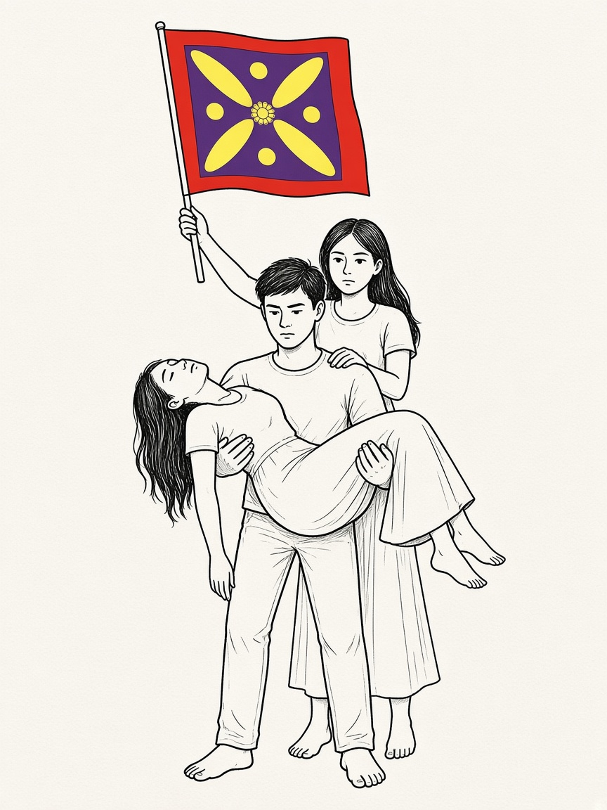
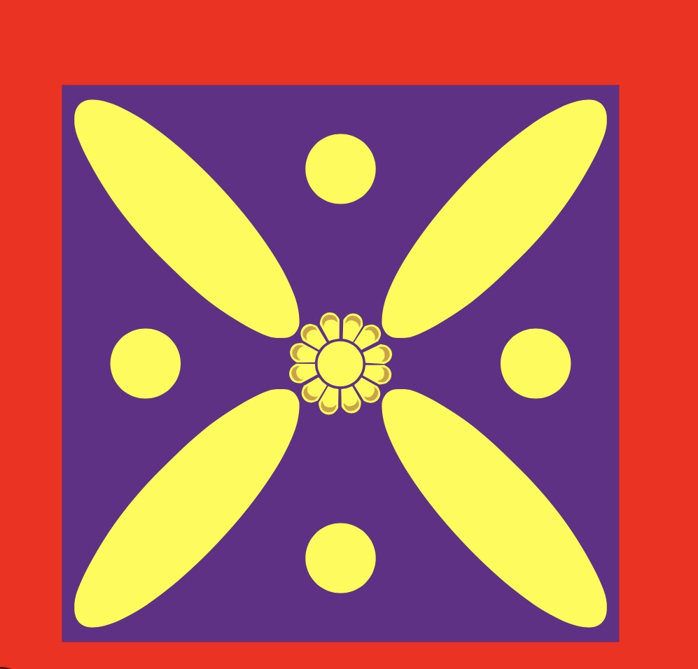
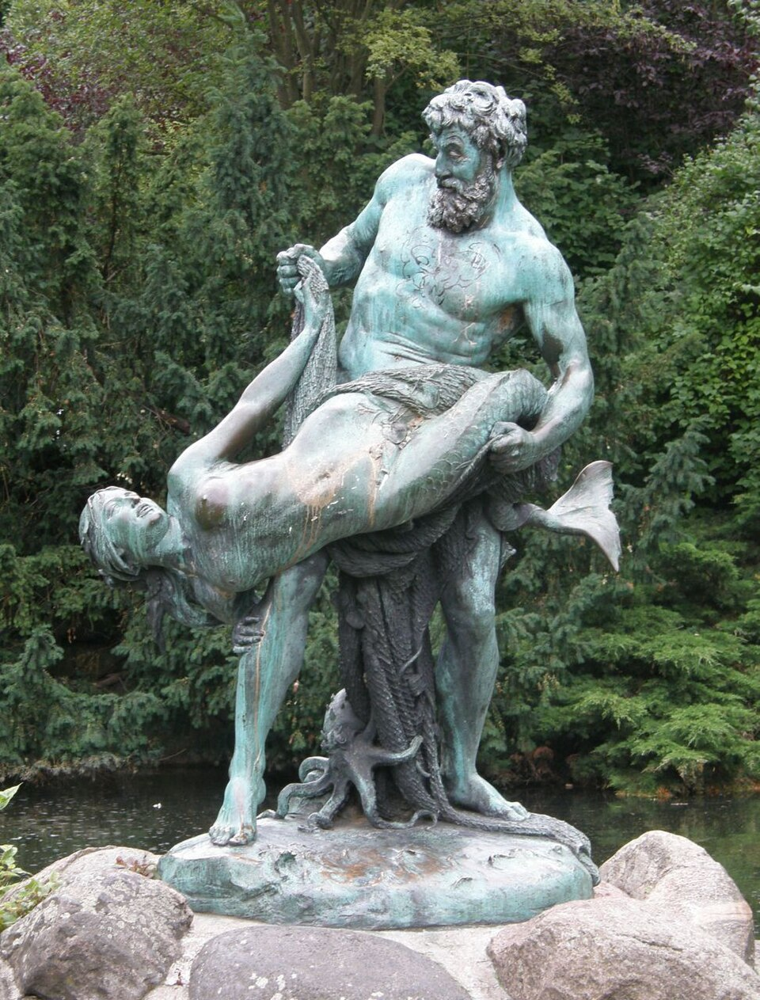
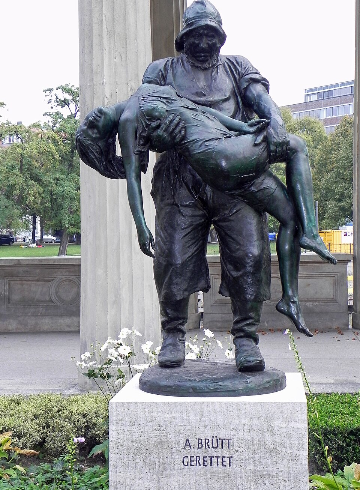

دیده نشدن
زخمی از دایرهٔ کمک بیرون میماند.

خواندن تصویر
بدنها، حمل کردن، نگه داشتن: از واقعیت.
دو دختر: مبارزه و نجات، کنار مرد. یکی حمل میشود. یکی میایستد و پرچم را بالا میبرد.
بر اساس واقعیت. تهران · تاریخ XXX · محلهٔ ######

تنها عنصر افزوده به صحنهداستان
تهران. تاریخ و محله پوشیده است. ارتباط، از سوی حکومت، قطع شد. عدد نمیآورم.
شاهد: حضور خودم. قرینه: نمونهٔ نوشتاری.
معماری اطلاع
فضای دانستن گرفته میشود.
زخمی از دایرهٔ کمک بیرون میماند.
واقعه به حافظهٔ مشترک نمیرسد.
سوگها از هم جدا میمانند.
مسیر
خیابان ۱۴۰۱ و ۱۴۰۴. کار فرهنگی از دانشجویی، در فضایی همیشه ملتهب.
برلین


حرکت حمل کردن را در این شهر، در برنز، دوباره دیدم. نه همان صحنه. حالا اینجا روی هوش مصنوعی کار میکنم، و با همان انگیزههای انسانی میخواهم این فن به دقیقترین استفادهاش برسد.
عکسها: آکسل موروسات؛ هایوتو، ویکیانبار.
مجلهٔ کاوه
برلین–شارلوتنبورگ، ۱۹۱۶ تا ۱۹۲۲. نام روی صفحه است و نشانش درفش. دورهای از آن در جنگ گذشت؛ از ۱۹۲۰ به فرهنگ و تاریخ برگشت.
ادامهاش نیستم. کنار خیابان، و کنار این مجسمهها، بخشی از مسیری است که مرا به اینجا رساند: یک زبان عمومی، و نامی که تخت را برنمیدارد.
 شمارهٔ ۱ · ۲۴ ژانویهٔ ۱۹۱۶
شمارهٔ ۱ · ۲۴ ژانویهٔ ۱۹۱۶
این مرکز
پرسش این است که چه چیز دانسته شود، و اعتراض کجا بنشیند. سمینارها، کلاسها، و فکر استادان برای این دقت مفیدند. از همینجا: فهم بیشتر، رشد بیشتر، و مشارکت بیشتر در توسعهٔ جامعهٔ مدنی ایران.
کاویان
پرسش از همان قطع دانستن میآید. شکل پیشنهادیاش پروندهای است که مردم بتوانند بخوانندش. تصمیم با خودشان میماند.
کسی که پیامد را زندگی میکند و به سند و حافظهٔ نهاد دسترسی ندارد. افق کار از ایران شروع میشود و به روی جاهای دیگر بسته نیست.
توان پرسیدن، مقایسهکردن، و پیگیری. اختیار تصمیم پیش مردم میماند.
طرح و تعهد. سامانهٔ در حال خدمت نیست. مثال آب، آزمون قدیمی یک مسئلهٔ کوچک بود، نه تعریف این کار.
آنچه به دست آدم میرسد
مرز سند، تفسیر، و پیشنهاد در خود نما دیده میشود. موفقیت با تعداد گزارش سنجیده نمیشود: فهم ممکنتر شده، خطایی اصلاح شده، آسیبی کم شده، یا نهادی پاسخگوتر شده است.
گردش
هر موضوع یک پروندهٔ زنده است. ماشینها ماده را به آرتیفکت تبدیل میکنند. آدمها آن را میخوانند، رد میکنند، یا صورت مسئله را عوض میکنند. انتشار از یک انسان میگذرد.
آرتیفکت واحد کار است، نه رأی. این گردش طراحی است. هیچ جعبهای در این ارائه نرمافزار مستقر نیست.
ظرفیتها
مسئله، تجربه، شاهد، و اعتراض. برای شنیدهشدن، عنوان مشاور لازم نیست.
منبع، نسخه، اصلاح، و پیامد. جزئیات آسیبزا وثیقهٔ دائمی پرونده نمیشود.
جستوجو، استخراج، مقایسه، پیشنویس، مسیردهی. منظم بودن، مرجع حقیقت نمیسازد.
دانش و اختلافنظر روی همان آرتیفکت. کارشان را بلدند. بهجای مردم تصمیم نمیگیرند.
روایت خوانا، گزینه، و کنش. هر مطالبهگری یک مالک انسانی دارد.
قواعد، اعتراض به خود کاویان، و حد قدرت بنیانگذار و حامی. درفش نباید تخت شود.
پاسخ نهاد کنار ادعا میماند. شناسایی شخص، متن را متوقف میکند. بند غروب برای بنیانگذار.
سه قضاوت
اعتبارش با منبع و روش بررسی است. احتمال یک مدل جای شاهد را نمیگیرد.
در عدمقطعیت، قضاوت ساختیافته کمک میکند، به شرطی که فرض و بازه دیده شود.
توزیع هزینه و فایده انتخاب مردم است. وزن تخصصی این حق را نمیسازد.
مشاور نظر میدهد. مردم انتخاب میکنند. روشها نامزدند، پیاده نشدهاند.
ماشینِ ساختیافته
قضاوتهای کوچک و برچسبخورده، با احتمال. متن عمومی نمینویسد.
Choice، Noul، و Score. اطمینان پایین یعنی برچسب پیش انسان میماند، نه اینکه «وسط» باشد.
درستبودن ادعا در جهان. عادلانهبودن هزینه. انتشار. سخنگفتن به نام مردم.
فارسی، آستانهها، و دادهٔ واقعی کاویان. سرعت و هزینه، ادعای سازندهاند تا روی این کار سنجیده شوند.
Jev سرویس میزبانیشده و مجوزدار است. جزء متنباز این طرح نیست.
مکث
آن پسر و آن دو دختر جای سیستم را نمیگیرند، و سیستم جای آنها را. سؤال همراه من این است: کوچکترین معماری امتناع چیست، در یک مدل، یک سازمان، و یک شهر.
تاریخ و محله پوشیده است. پیادهسازی در این پروپوزال نیست.
کلید پایین، صفحهٔ بعد